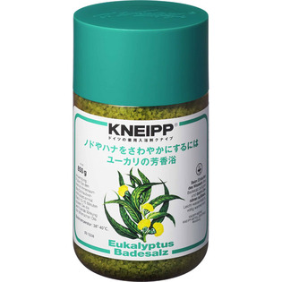

返回列表
产品名称：クナイプ バスソルト ユーカリ

クナイプ・ジャパン クナイプ バスソルト ユーカリ ８５０ｇ（医薬部外品）
メーカー クナイプ・ジャパン
JANコード 4580294850179
商品の特徴
クナイプはハーブの精油と岩塩を精製した天然の塩から生まれたドイツに入浴剤です。
ユーカリの爽快な香りの刺激により、お風呂上りが爽快で、ノドやハナがさわやかになります。
成分・分量
【成分】
塩化Ｎａ、ユーカリ油、炭酸Ｎａ、ラウリン酸ＰＯＥ（２０）ソルビタン、オレオイルメチルタウリンＮａ、ＰＯＥ（カプリル・カプリン酸）グリセリル、ビサボロール、緑４０１、水
用法及び用量
【使用方法】
浴そうのお湯（約２００ｌ）にバスソルト４０ｇをよくかきまぜながら溶かして入浴してください。